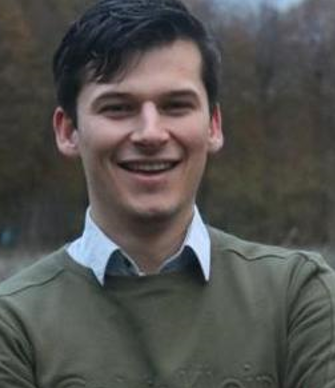

MSc Medical Imaging & Interventions
Focus on medical image processing, automated anatomical segmentation, machine learning applications in medical imaging, and interventional and imaging technologies.

Technical Medicine • Medical Imaging • Clinical Innovation
I am an MSc candidate in Medical Imaging & Interventions with hands-on experience in medical image processing, dosimetric analysis, clinical validation, and multidisciplinary technical-clinical projects.
My academic and practical background sits at the intersection of healthcare, imaging technology, analysis, and engineering. During my studies and internships, I have worked on projects involving CT and MRI-based image analysis, anatomical segmentation, radiotherapy workflow evaluation, and surgical simulation.
What motivates me most is solving clinically relevant problems in a structured way: understanding the workflow, identifying where technology can add value, and turning that into a workable solution for practice.
Focus on medical image processing, automated anatomical segmentation, machine learning applications in medical imaging, and interventional and imaging technologies.
Bachelor training in technical medicine with a thesis at UMCG, including work on dynamic PET/CT and parametric imaging analysis.
Worked on retrospective dosimetric assessment of IGRT methods in DIBH whole-breast radiotherapy, comparing kV–kV matching with CBCT-based positioning.
The project focused on quantifying differences in target coverage and OAR dose across patient datasets and evaluating the clinical implications of different matching strategies.
Worked on the development of a 3D workflow for mastoidectomy simulation. This included CT segmentation, virtual surgery in 3D Slicer, and the design of a patient-specific ear prosthesis.
A key element of this project was translating imaging data and clinical anatomy into a usable workflow for surgical planning and validation by an ENT surgeon.
Investigated the relationship between LSCI and TcPO₂ under different temperature conditions in repeated measurements.
The work focused on perfusion measurement behavior, temperature dependency, and clinical application in patients with peripheral arterial disease.
Evaluated dynamic PET/CT scanning and direct parametric imaging, with attention to differentiation between oncological, inflammatory, and infectious processes.
This project involved clinical data analysis and parameter extraction from advanced nuclear medicine imaging workflows.
Interested in medical technology, imaging workflows, technical medicine, or clinical innovation? Feel free to get in touch.
Name: Stijn van Gemert
Location: Enschede, The Netherlands
LinkedIn: linkedin.com/in/stijn-van-gemert-20a838229